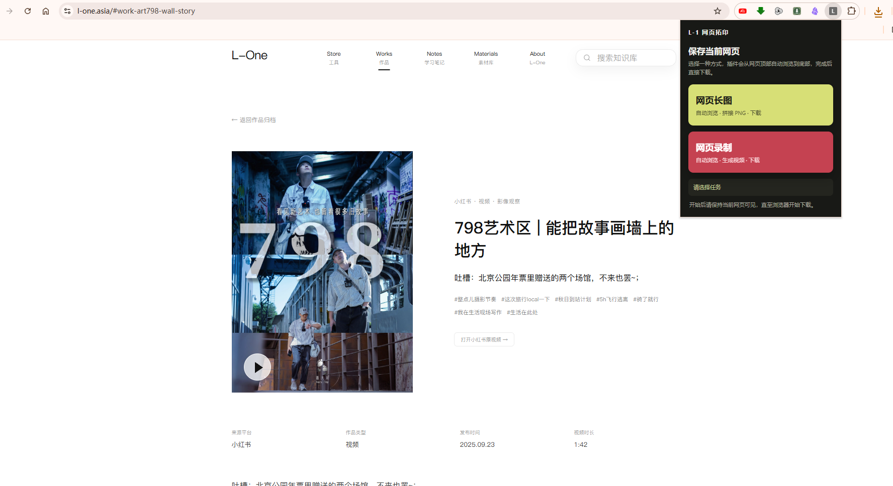
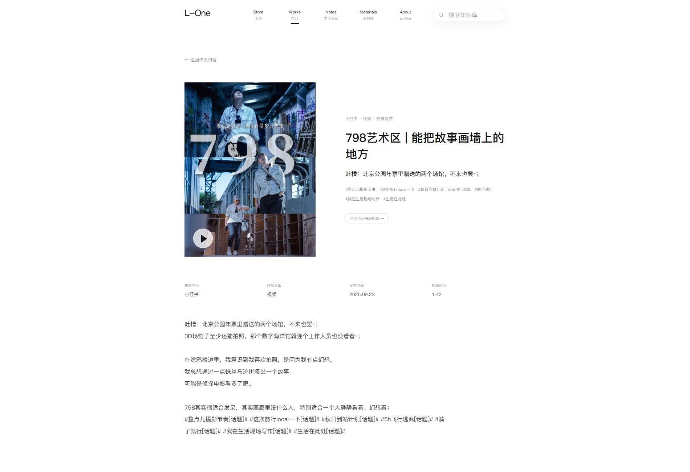

录屏可能出现黑边
不同窗口比例下，画面边缘可能保留黑边。
L-1 WEB CAPTURE · V0.2.2 · PUBLIC BETA
Chrome 116+公开内测
L-1 网页拓印把当前网页保存为长图 PNG，或录成一段无声的滚动视频。
v0.2.2 · Chrome 116+ 已验证 · 16,700 bytes · SHA-256 可核验

任务开始后保持当前标签页，不切换到别处。
停留在目标网页的当前标签页。
选择“网页长图”或“网页录制”。
结束后，长图 PNG 或无声滚动视频会保存在浏览器下载目录。

内测包开放后，按这三步把解压后的文件夹加载到 Chrome。
把内测包解压到本机文件夹，不要直接在压缩包里打开。
在 Chrome 地址栏打开 chrome://extensions，再开启“开发者模式”。
点击“加载已解压的扩展程序”，选择 L-1 网页拓印所在的解压文件夹。
不同窗口比例下，画面边缘可能保留黑边。
这类页面暂不属于当前内测验证范围。
浏览器内部页面、扩展商店等受保护页面不在本轮范围内。
当前只完成 Chrome 116+ 验证，不把 Edge 写成已验证支持。
适合
暂不适合
当前已验证 Chrome 116 或更高版本。Edge 尚未写入已验证支持。
一张 PNG 图片。
当前录制为无声滚动视频。
浏览器设置的下载目录。
保持在当前网页标签页，等待自动滚动结束。
点击本页“下载内测包”。这是公开内测版本，不是正式稳定版。
PUBLIC BETA
内测反馈：提交反馈